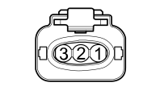

K83 FUEL PRESSURE SENSOR ( ENGINE )
- Path
- Electrical equipment > 3 CONNECTORS > K SENSORS AND SENDER UNITS > K083 FUEL PRESSURE SENSOR > K83 FUEL PRESSURE SENSOR ( ENGINE )
- Kind
- connector pinout (pin -> wire colour -> other end)
- Applies to
- engines: 1.2 8v, 1.6 16v, 1.3 JTD 16V, 1.9 JTD 8V, 1.9 DIESEL; all production periods
- Interactive page
- https://sloeber94.github.io/elrnDB-fDbl/en/#/223004999
Applies to: engines: 1.2 8v, 1.6 16v, 1.3 JTD 16V, 1.9 JTD 8V, 1.9 DIESEL; all production periods

Wiring | Colour |
|---|---|
NERO (black) |
Pin | Cable | Destination | |||
|---|---|---|---|---|---|
Sec.. | Colour | Nodo | Connect. | Pin | |
1 | 0,5 | GR (yellow with red stripe) | 6 | ||
2 | 0,5 | CN (orange with black stripe) | 38 | ||
3 | 0,5 | VG (green with yellow stripe) | 8 | ||